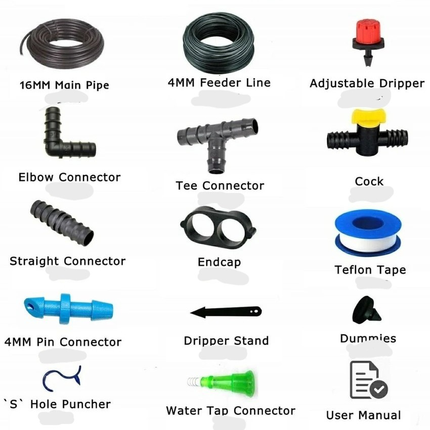

📖 Introduction
Drip irrigation is a modern method where water is supplied directly to the root zone of plants
in small, precise quantities. This reduces water wastage and improves crop yield. It is highly
suitable for areas with low water availability.
⚙️ Parts of a Drip Irrigation System
- Pump/Water Source – Provides water supply.
- Mainline Pipe – Carries water from the source.
- Sub-main Pipes – Distributes water to different crop rows.
- Drip Laterals – Small pipes with emitters.
- Emitters (Drippers) – Release water drop by drop near plant roots.
- Filters – Prevent clogging of emitters.
- Fittings & Valves – Used for connections and control.

🔧 How to Set Up
- Install a water pump or connect to a water source.
- Lay the mainline pipe from the water source to the field.
- Connect sub-main pipes branching from the mainline.
- Place drip laterals (small pipes) along crop rows.
- Attach emitters at correct spacing near plant roots.
- Fix filters to avoid clogging of the system.
- Check connections and run water to ensure proper flow.
▶️ How to Use
Once installed, turn on the pump or open the water source. Water flows
through mainline → sub-main → laterals → emitters, reaching plant roots drop by drop.
Control valves can be used to irrigate only certain sections at a time.
🛠️ Maintenance Tips
- Clean filters regularly to avoid clogging.
- Check emitters weekly to ensure proper flow.
- Flush the system pipelines once every 2 weeks.
- Inspect for leaks or pipe damage and replace faulty parts.
- Use fertilizer injection for better crop nutrition.
⬅ Back to Irrigation Techniques